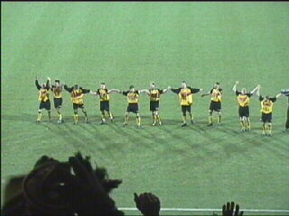

|
Roda JC - Ajax (1-1) 15 december 2001 |
Kieft mocht voor Canal+ de wedstrijd analyseren
Koeman bewondert het PLS.
Het bekende vuurwerk in het Ajaxvak.
Lachambre en Vicelich speelden een prima partij!
De choreografie die door het Fanprojekt en WSU
werd georganiseerd mislukte helaas gedeeltelijk.
De choreografie op west.
Het stadion was behoorlijk vol.
Berglund wordt aangetikt door Chivu: penalty!
Anastasiou stuurt Grim naar de verkeerde hoek.
1-0 (23e min).
Hoppa...
Vrolijk kerstmupje met vriendje op west.

De Ajaxspelers hadden veel verzorging nodig.
Hierdoor was er tijd om de kerstversieringen op
noord te bewonderen.
En deze krismesmeëdsjer op oost.
Gezien het betere trek- en duwwerk bleken er
wederom ongenode gasten op west aanwezig.
Na een scrimage scoort Zlatan in de 68e minuut
de gelijkmaker.
Grim zit er ook al doorheen en moet vervangen
worden.

Het bleef 1-1 en Roda mag terugzien op een
goede wedstrijd met veel publiek.
Rare vogel in Z16.
P. toont zijn nieuwe kapsel.
©KPD